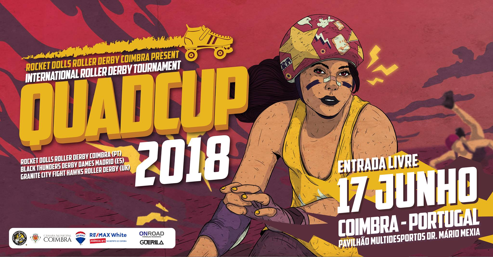
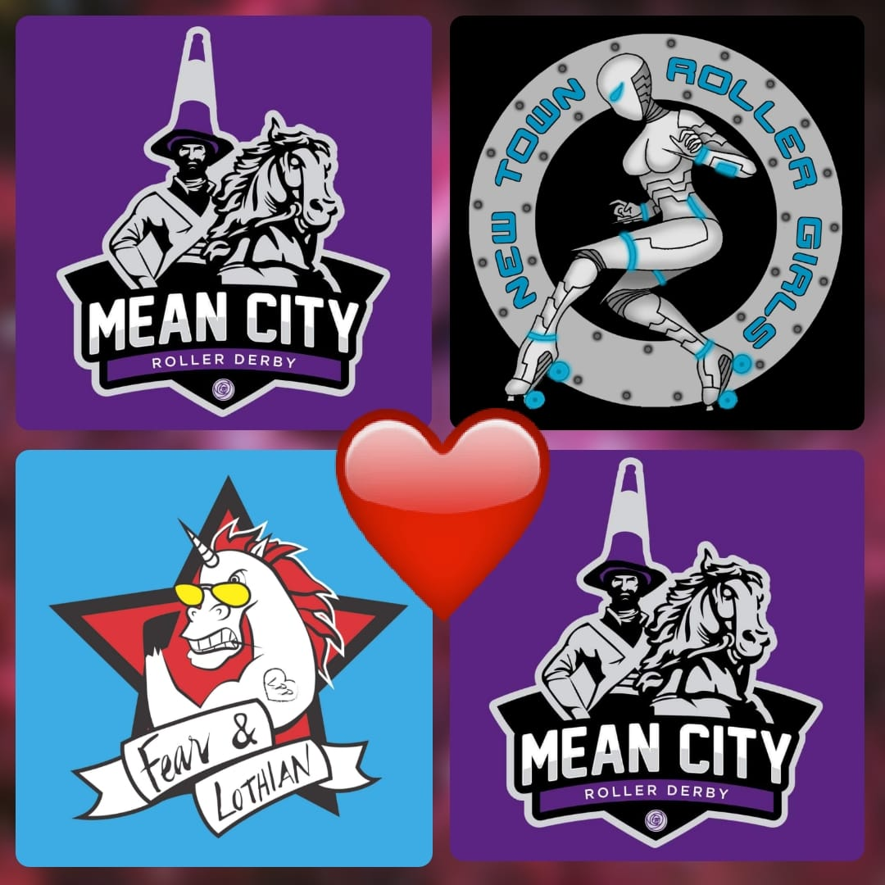
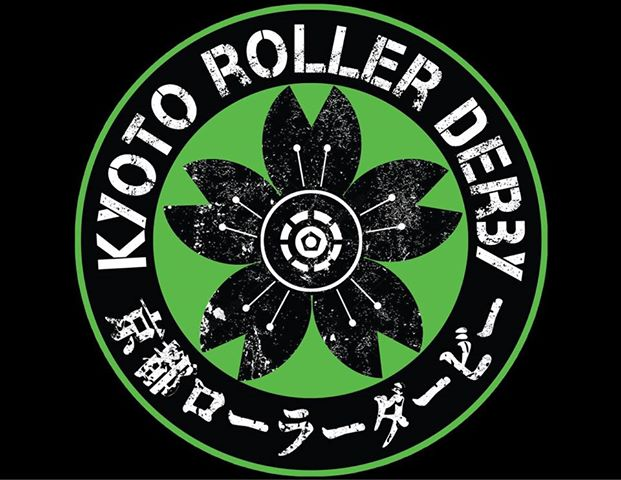
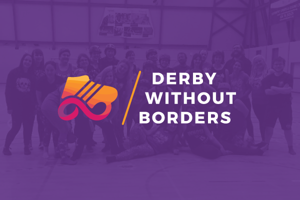
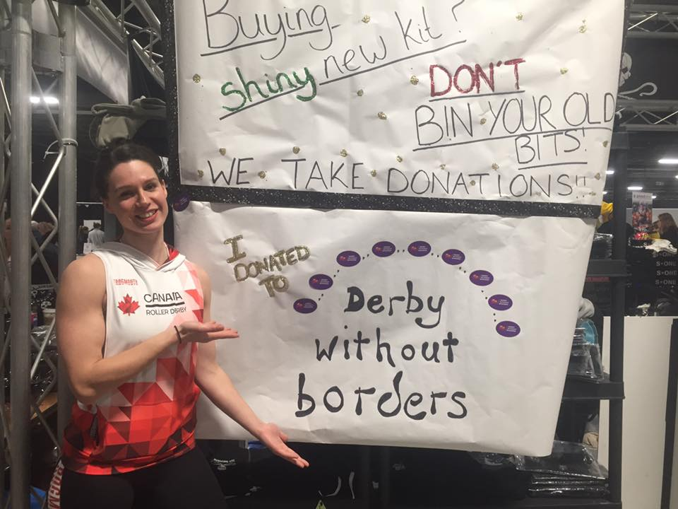
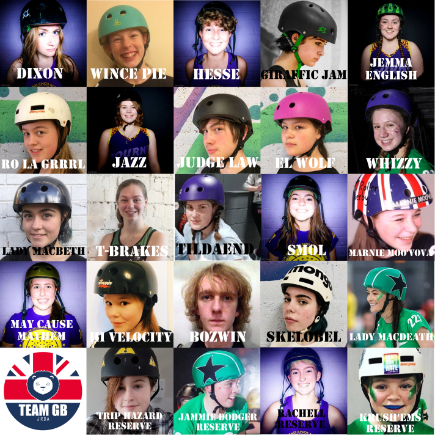
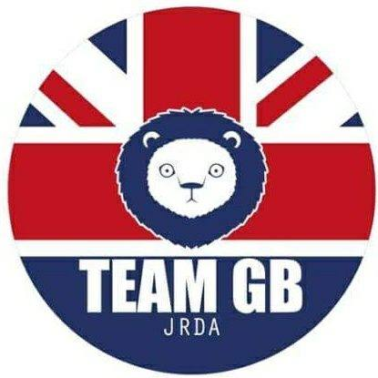

Fair City Rollers: Rising
This Sunday is the only time you'll see Perth's local roller derby league, Fair City Rollers, on track at home this year, due to the popularity of their excellent local venue, Bell's Sport Centre. As a result, for those following the team, it's an opportunity not to be missed!
 Fair City, and the leagues combining to face them as "Scotland's Rising Stars"
Fair City, and the leagues combining to face them as "Scotland's Rising Stars"
The Fear Maidens, Fair City's travel team, will be facing a mixed exhibition team drawing newer skaters from Ayrshire Roller Derby, Bairn City Rollers' Central Belters, Dundee Roller Derby, Granite City Roller Derby, Lothian Roller Derby and Mean City Roller Derby. Coming together as "Scotland's Rising Stars", these skaters represent some of the best new talent in Scottish roller derby.
The Fear Maidens have played one previous bout this year, losing away to Dundee's B team, the Bonnie Colliders, back in April. Due to way Flat Track Stats' rating changes are applied (always equally, but oppositely, to both teams), this has almost certainly underrated the Perth team at present, due to both Dundee teams' considerable strength gains year on year. Whilst this game against an exhibition team will not compensate in the ratings, we're confident of a strong showing from Perth's only roller derby team at home.
Fair City's Invader Zoom told us, "We are so excited to be playing at home again and can't wait for the people of Perth to see some of our new recruits in action. Our last home game was a nail biter that had the audience on the edge of their seats all game, and we are sure this game will be just as thrilling with a challenge team of skaters from 6 different Scottish leagues!"
As well as Roller Derby action on track, there will be the usual collection of stalls, including an opportunity to support the charity CLIC Sargent in Scotland, raising money to help Young Lives versus Cancer. Fair City Rollers will be participating in CLIC Sargent's Rainbow Assault assault course event in August.
Fair City Rollers' "Pack to the Future" is at Bell's Sports Centre, Perth, on the 24th June, 2018. Doors open at 1pm.
Non-US/Canadian Derby Roundup:23rd/24th June Edition
Predictions of bouts are from FTS, if possible, and from our own SRD Rank where FTS cannot make predictions (for example: Latin America, or non-MRDA men’s bouts). (SRDRank also has recent WFTDA rankings, including the 31st June ranking, as well as SRDRank, and allows you to make predictions from them.)
If we’ve missed you from our roundup, please let us know! [Or add yourselves to FTS and/or Derbylisting]
(Note: we're especially likely to be missing items this week, as Facebook's response to the Cambridge Analytica scandal has resulted in them turning off large parts of the services we use to automatically collate events for this article. We don't think we've missed too much, but...)We're trying a new colour coding this week, to differentiate BOUTS from RECRUITMENTS and OPEN SCRIMs, and BOOTCAMPs.
Scotland
All the excitement in Scotland is on Sunday this weekend.- Sun, Edinburgh: Auld Reekie Roller Girls/Derby host a double header event [EVENT]
- Auld Reekie All Stars Rookies (Edinburgh B) versus ? [FTS?]
- Auld Reekie All Stars (Edinburgh A) versus Middlesbrough Roller Derby [FTS]
- Sun, Perth: Fair City Rollers host their only fixture of the year, as they take on "Scotland's Rising Stars". This event includes a stall from CLIC Sargent, raising funds for Young Lives versus Cancer. [EVENT]
- Fear Maidens (Perth) versus Scotland's Rising Stars
- Mon, Aberdeen: Granite City Roller Derby host a fundraising Quiz Night at Krakatoa [EVENT]
United Kingdom
British Champs continues to provide the majority of bouts this weekend, with the Tier 1 Men's coming to a conclusion, amongst others. There's also more bootcamps to support Team GB Juniors, and the usual spread of open scrims!- Fri, Durham, England: Durham City Rolling Angels host another of their New Skater Open Nights for interested people. This event not owned by DCRA's page, so it's a bit tricker to find. [EVENT]
- Fri, Swindon, England: Wiltshire Roller Derby host another of their Mixed Open Scrim events, with their alternating jam structure to support WFTDA, MRDA, and Open gender policies within the same scrim. [EVENT]
-
Newcastle Upon Tyne, England: Tyne and Fear Roller Derby host the final round of the British Championships Tier 1 Mens. With both the hosts, and their opponents from Manchester, on 3 wins apiece, the men's trophy will genuinely be decided by the final game here! [FTS Tournament][EVENT]
- Barrow Infernos (Barrow-in-Furness M) versus Mild Discomfort (London B)
- New Wheeled Order (Manchester M) versus Tyne and Fear (Newcastle M)
-
Salford, England: Arcadia Roller Derby host the British Championships Tier 4 West [FTS Tournament][EVENT]
- Arcadia Roller Derby versus Blackpool Roller Derby
- North Cheshire Victory Rollers versus Riverside Rebels Roller Derby (Birkenhead) [FTS] (not BC, due to Riverside Rebels removing themselves)
- Sheffield, England: Sheffield Steel Junior Rollers host a bootcamp run by Team GB Junior Roller Derby (and England Mens', Lincolnshire Rolling Thunders') Toots [EVENT]
- Queensferry, Wales: North Wales Roller Derby host Leeds Roller Derby in a closed bout [FTS]
-
Swansea, Wales: Swansea City Roller Derby host a single header event [EVENT]
- Swansea City versus Rebellion Roller Derby (Milton Keynes) [FTS]
- Sun, Oadby, England: Leicestershire Dolly Rockit Rollers host their monthly Open To All Scrim, open to all genders, mins-passed 18+. [EVENT]
- Sun, Taunton, England: SWAT (South West Angels of Terror) host the British Championships Tier 2 South [FTS Tournament][EVENT]
- Batter C Power (London C) versus SWAT Roller Derby
- Bath Roller Derby Girls versus North Devon Roller Derby
- Sun, Queensferry, Wales: North Wales Roller Derby host another of their Free Taster Sessions (all genders welcome) for those interested in trying the sport [EVENT]
Europe
France continues to have a huge amount of roller derby this weekend, with Germany giving them a run for their money. Belgium is where the bootcamps are at, however, with the Charleroi-based one supporting Team Europe Juniors!- Thurs, Bayonne, France: the second of Euskal Roller Derby's recruitment events for this year, for interested skaters [EVENT]
- Fri, Besançon, France: the Voodoo Vixens are hosting an open recruitment (no EVENTs or even Flyers... but this post referencing it) [Post]
- Fri, Duisburg, Germany: Mine Monsters host an outreach / fundraiser / pub outing event ("without Karaoke") [EVENT]
- Fri, Zaragoza, Spain: The Sicarias de Cierzo are participating in the Deporte Y Feministo ("Sport and Feminism") event, run by the collective Komando Feminista [EVENT]
- Graz, Austria: Dust City Rollers have a stall and presence at the CSD Parkfest, to support LGBTQIA+ peoples. (CSD, or Christopher Street Day, is the German/Austrian equivalent of Pride). [EVENT]
- Vienna, Austria: Vienna Roller Derby host a double header to end off their season [EVENT]
- Bastia, Corsica, France: Roller Derby Club Bastiacciu host their final scrimmage of the season! (late notice because there's no event or flyer for this) [EVENT post]
- Bordeaux, France: Roller Derby Bordeaux Club host another of their Summer Sessions open learn to skate course sessions [EVENT]
-
Brest, France: B.M.O Roller Derby Girls host a double header of roller derby [EVENT]
- Toutes Étoiles (Brest A) versus Les Déferl'haine (Rennes A) [FTS]
- Les Sabordeuses (Brest B) versus Les Mortal Condates (Rennes B) + friends
-
Toulouse, France: Roller Derby Toulouse host a quintuple-header of roller derby [EVENT]
- Barons Cathars (Toulouse MB) versus MadRiders (Madrid M) [FTS]
- Blocka Nostra (Toulouse B) versus Quedalles (Paris B) [FTS]
- Hell's Pitchoun (?) veruss Pibrac de Caraibes (Pibrac J) [Junior Exhibition]
- Quad Guards (Toulouse MA) versus UB (mixed exhib)
- Nothing Toulouse (Toulouse A) versus UB (mixed exhib)
-
Erfurt, Germany: Roller Derby Erfurt host a triple header of roller derby bouts [EVENT]
- Catpeople versus Doglovers (All gender/OTA scrimmage)
- South Germany Men's Roller Derby versus Vi-Kings (Liege M) [FTS]
- Gargörlz (Erfurt) versus Riot Rockets (Leipzig) [FTS]
-
Kaiserslautern, Germany: The Roller Girls of the Apocalypse host an "Unbirthday Party" raising funds to support St Baldricks Foundation (supporting research against childhood cancers) [EVENT]
- Mixed teams bout
- The Wreckoning (Kaisterslautern A) versus Lincolnshire Bombers [FTS]
- Munich, Germany: Munich Rolling Rebels host a double header, A and B, versus Vicenza's Anguanas [EVENT]
- Dublin, Ireland: Men Behaving Derby host a "Meet up", which seems to be something like an open practice? [EVENT]
- Eindhoven, Netherlands: Rockcity Rollers end their season with a Sur5al tournament featuring teams from Nijmegen, Groningen and The Hague, as well as the host city [EVENT]
-
Bilbao, Spain: Bilbo Roller Derby host a single header agains Badalona [EVENT]
- Botxo Killers (Bilbao A) versus Bad'n Rollers (Badalona A) [FTS]
- Sun, Brussels, Belgium: Manneken Beasts host a min-bootcamp, open to all genders, with 2 hours of bootcamp and 1 of scrimmage. [EVENT]
- Sun, Charleroi, Belgium: the next leg of Bootcamps run by Optimus Grime are hosted by Blackland Teenage Terrors and Blackland Rockin' K Rollers. Proceeds from the bootcamp go towards the Blackland skaters in Team Europe Junior Derby, attending their first Junior Roller Derby World Cup [EVENT]
- Sun, Poitiers, France: les Broyeuses du Poitou host a triple header of roller derby ! [EVENT]
- Broyeuses du Poitou "rec" versus "Surprise team"
- Broyeuses du Poitou (Poitiers A) versus Les Gueuses de Pigalle B (Paris/Gueuses B) [FTS]
- UB v UB (mixed open subscription exhib bout)
- Sun, Saint-Gratien, France: Roller Derby Panthers host a recruitment day, including both training sessions for more experienced transfers and total beginners. Open to WFTDA-gender policy conforming skaters. [EVENT]
- Sun, Rennes, France: Les Bonhommes run a recruitment event for the Rennes men's derby league [EVENT]
- Sun, Toulouse, France: following up on the previous day, Roller Derby Toulouse host an additional Sur5al tournament [EVENT]
- Sun, Essen, Germany: Ruhrpott Roller Girls host a single header against Liege [EVENT]
- Ruhrpott Roller Girls versus Holy Wheels Menace (Liege A) [FTS]
- Sun, Ludwigsburg, Germany: Barockcity Roller Derby host another of their Schnuppertraining events - open training recruitment events! [EVENT]
- Sun, Utrecht, Netherlands: Dom City Roller Derby host another of their regular open training sessions - a combination of a try-derby event, and an open training event for others [EVENT]
- Sun, Gdansk, Poland: 3City Piranhas are participating in the monthly Parkowisko events, promoting Poland's public parks with a get together in one of them each month. (The end of the signup period for 3City's next recruitment/training period is also ending very soon, so this is a good reminder to sign up!) [EVENT]
- Sun, Madrid, Spain: Roller Derby Madrid host their next recruitment day for those interested in joining the team! [EVENT]
- Mon, Linz, Austria: Steelcity Rollers are holding a recruitment day for anyone interested in joining the league [EVENT]
- Mon, Le Mans, France: Roller Derby 72 host their next recruitment event, no Facebook event, just the linked flyer[EVENT Flyer]
- Tues, Épinal, France: Reaper's Crew host an evening introduction to Roller Derby for those interested in the sport. [EVENT]
- Tues, Paris, France: Les Gueuses de Pigalle host the first of three open recruitment sessions in the next two weeks. [EVENT]
- Wed, Helsinki, Finland: Kallio Rolling Rainbow are hosting a Pride Roller Disco as part of Pride Month [EVENT]
- Wed, Le Havre, France: Le Havre Roller Derby host their own recruitment session for those interested in joining the sport [EVENT]
Pacific
Post The Great Southern Slam, it looks like everyone is having a bit of a rest this weekend, with only a bit of roller derby on the menu.!- Thurs, Brisbane, QLD, Australia: North Brisbane Rollers host the third rotation of their Freshmeat Info Nights, for anyone interested in finding out more about the team [EVENT]
- Fri, Runaway Bay, QLD, Australia: East Coast Derby Dolls host the second of their all-gender open days for new skaters [EVENT]
- Morley, WA, Australia: Perth Roller Derby host the third of their home teams bouts, as Mistresses of Mayhem take on the Apocalipstiks [EVENT]
- Sun, Keysborough, VIC, Australia: Kingston City Rollers host their next open Mixer event - a series of open scrimmage types [EVENT]
- Non-contact Scrimmage
- "Prebouting" scrimmage
- Bout Scrimmage
- Sun, Christchurch, New Zealand: Otautahi Roller Derby League host their June open scrimmage, open to all mins-tested skaters [EVENT]
- Mon, Palmerston North, New Zealand: Swamp City Roller Derby launch the next series of their Roller Derby Beginners Course for all prospective new skaters [EVENT]
Latin America
We think we've found all the roller derby in Latin America, this weekend, but there's always a higher chance of us missing things here. Please let us know if we have!- Fri, La Paz, Baja California, Mexico: Aguamalas Roller Derby host a third birthday party event, with raffles, "surprises" and live music. Funds raised go towards their next bout in Queretaro. [EVENT]
-
Osorno, Chile: Deskarriados Roller Derby host the finals of the Torneo X-MEN 2018, Chilean men's national tournament [FTS Tournament][EVENT]
- no fixtures public as yet
- Mexico City, Mexico: The Quadtlicues of Mexico City Roller Derby host a "Queers on Wheels" costume party, in support of gender diversity [EVENT]
- Sun, Buenos Aires, Argentina: With late notice, Sailor City Rollers host a double header bout [EVENT]
- Sun, La Plata, Buenos Aires, Argentina: Chat Noir host a bingo and games night as a meet up and outreach event [EVENT]
- Sun, São Paulo, Brazil: the Ladies of Helltown host their traditional St Johns Festival ("Junino") Games of Helltown event, with two open subscription bouts to sign up to [EVENT]
- Full contact bout
- "Tennis Derby" bout [low/non contact?]
- also: raffles, games, "elegant mail", etc
- Sun, Mexico City, Mexico: The All-Blacks Roller Derby A team play Aniquiladoras (of Liga Roller Derby Cuidad de Mexico). No Event, just a flyer posted on Thursday! [EVENT flyer]
- All-Blacks Block Division (Mexico City A ) versus Aniquiladoras (LRDCM/Mexico City B) [FTS]
- Sun, San Luis Potosí, Mexico: Furiosas Roller Derby host a triangular tournament [EVENT]
Africa and Middle East
There's no roller derby in this region this weekend, as far as we know.- Thurs, Pretoria, South Africa: P-Town Roller Derby League host another of their Funskate open skating tryouts [EVENT]
Elsewhere
- Fri-Sun, Portland, Oregon, USA: Of interest due to the attendance of Crime City Rollers (Malmö), the 2018 Hometown Throwdown is hosted by Rose City Rollers in Portland [FTS Tournament][EVENT]
- Gotham Girls Roller Derby (New York) versus Crime City Rollers
- Angel City Roller Derby (Los Angeles) versus Crime City Rollers
- Wheels of Justice (Portland A) versus Crime City Rollers
- Fri-Sun, Feasterville, PA, USA: Of interest due to the attendance of Gothenburg Roller Derby, Paris Rollergirls and Oslo Roller Derby, ECDX 2018, the 12th East Coast Derby Extravaganza, Philly Roller Derby's yearly tournament event is happening this weekend [FTS Tournament][EVENT]
- Thurs-Fri, Feasterville, PA, USA: ECDX kicks off the day before with a pair of WFTDA Officiating Clinics [EVENT]
- Thurs-Sat, Feasterville, PA, USA: ECDX also incorporates a series of on-skates clinics by Miracle Whips (Montreal Roller Derby / Team Canada 2018) [EVENT]
- Gothenburg versus Grand Raggidy (Grandville, MI)
- Gothenburg versus Toronto
- Philly versus Paris
- Oslo versus Big Easy (New Orleans)
- Oslo versus Reading
- Charlottesville versus Paris
- Quebec versus Gothenburg
- Free State (Rockville, MD) versus Oslo
- Madison versus Paris
Granite City's Hawks off to Fight in Portugal!
As well as the exciting home games in Scotland this weekend, there's also an equally exciting away game, as Aberdeen's Granite City Roller Derby send their B team off to Portugal to play in the Quad Cup 2018!
This is the second iteration of the Quad Cup, the 2017 version seeing hosts, Coimbra's Rocket Dolls Roller Derby, play Black Thunders Roller Derby of Madrid, Lyon Roller Derby B team, Gones'n'Roses, and the exhibition team Liberty Rebellion in a 2 day round robin.

This 2018 iteration of the European tournament pits the Fight Hawks against the returning teams of the hosts, and Black Thunders Roller Derby in a round-robin format in one day.
These will be the first games for the Fight Hawks this year, after their final bout in 2017, an extremely closely fought 2 point win against York Minxters!
Their opponents, meanwhile, have had one or two bouts already this year: Black Thunders playing Las Palmas to an overwhelming win early in the year; and both teams having faced As Brigantias (A Coruña, hosts of the upcoming WFTDA Playoffs in August). Whilst neither team defeated A Coruña's finest, the Black Thunders did considerably better than Coimbra, with a mere 34 point loss on an overall low-scoring game. As the Madrid team also defeated all comers in the 2017 Quad Cup, they must be the favourites this time around as well.
Flat Track Stats agrees, with their European rating (at the time of publication), giving Black Thunders a 91% chance of victory over the hosts, and a 95% chance of victory over the Fight Hawks, who come in as the underdogs.
Of these, however, the Fight Hawks are also the clear wildcards - with few close connections between their rating games and those of the two Iberian teams, they have the highest uncertainty in their performance; and their "rating momentum" was upward for the entirety of last year. With even FTS's pessimistic prediction giving Granite City B an expected 21:25 score ratio against the hosts (translating to perhaps a 20 to 30 point final score difference), it seems very possible for Aberdeen to provide the upsets this weekend. Given the disruptive behaviour of their namesakes, what would be more appropriate?
The Quad Cup 2018 will be held in the Pavilhão Multiusos de Coimbra, Coimbra, Portugal, with the first bouts starting at 11am (WEST, BST) on the 17th June.
Mean City face the Lothians, twice, 16th June.
This weekend, there's yet more Roller Derby action in Glasgow, as Mean City Roller Derby, the city's open gender league, takes on two opponents at once.
Livingston + West Lothian's New Town Roller Girls, who have been pretty busy this year already, travelling up to Inverness to play ICRD in April. NTRG have been building up to this next bout with an open scrimmage against The World last month, and with one of their skaters having visited Rimini, Italy's Stray Beez in the last month, we assume that New Town will be buzzing with confidence on track.
NTRG will be taking on Mean City's WFTDA-gender-policy team ("Mean City Women"). The Mean City team have had a quieter year, last facing Lothian Derby Dolls towards the end of 2017, so it will be interesting to see how things have changed on track in the past 6 months...
Flat Track Stats predicts a close game, with the median result being a 19:21 points ratio in favour of the home team; with scores that close, however, it could be just a single power jam which decides the result!
In the second game, Fear & Lothian, the Midlothian-based open gender team, will face Mean City's open gender team. Fear & Lothian have had a less busy year to date than NTRG, with their last game in November 2017. Since then, however, the team have been holding regular scrims with their WFTDA-gender colleagues in Lothian Derby Dolls, and have undergone a round of recruitment. We may even see some new faces on track this Saturday!
Mean City's Open Gender team have regularly faced F&L - one of the limitations of open gender derby is still the paucity of opponents - and the two teams know each other well.
Mean City overall has also had a new intake at the start of the year - and there's some changes in both rosters, to judge from their series of roster photos being run over on their Facebook page.

Mean City President, Gord'n'Thorg told us:
"Glasgow's first - and meanest - Open To All Roller Derby league return to The Arc at Glasgow Caledonian University this Saturday 16th of June. After a false start ("yielding!") earlier in the year; we're getting back to the track with a Double Header against two of our friendly, neighbouring leagues.
We start with a WFTDA-flavoured face-off between the home side and Livingston's New Town Roller Girls. Members of both teams have had a tasty sample of each other at a few recent scrims. We're looking forward to getting a proper look at each other across league lines. I don't think anyone would be adverse to the idea of another semi-local rivalry getting up and rolling...
On the subject of rivalries; we're following this with open-gender action, as Fear and Lothian array themselves against us once again. Our contests have been fierce in the past, and we'll be looking for more of the same as we field some new faces against familiar foes...
If you can't believe that all of this can be yours and only lighten your purse by £5.00, we'll also be giving you your first chance to lay hands on our latest batch of Mean City Merchandise. You'll wonder how you've managed without it!
Looking forward to seeing everyone there.
Well, weather permitting..."
You can see both games on the 16th June, from 12:15 at the ARC Sports Centre in Glasgow Caledonian University.
Roller Derby comes to Kyoto! ローラーダービーが京都に来る。
Here at SRD, we always like to see Roller Derby expanding into new places; especially places where there's been no roller derby before.
Whilst Roller Derby has been in Japan (in Okinawa and Tokyo, and, until this year, Misawa), there's been little growth outside of those regions. (Tokyo Roller Derby have expanded to contain teams based in the surrounding cities, such as Yokohama, but not outside the Kantō region; the most recent independent team, Kamikaze Badass, is also based in Tokyo.) So, it was particularly exciting to see the announcement this year of a new league, based in Kyōto, in the Kansai region!
We caught up with Kyoto Roller Derby's founders, Kat and Josie, to find out a bit more about them, and what inspired them to seed more roller derby in Japan.

It's been a while since the last Roller Derby league was founded in Japan. Can you tell us a bit about yourselves as founders?
Kat: I skated with Bath Roller Derby Girls in the U.K. and I absolutely loved it! The team was in its early stages back then and it was so nice to be a part of something at the ground level. After moving to Japan and being really far away from any teams here, I kept writing messages of desperation on Facebook forums hoping to pique some interest. Eventually someone replied!
Josie: That would be me! I had been living in Japan for two years, teaching English and loving life up in the mountains, but every day I was still pining for the outlet that is derby. I messaged Kat having seen a plea of hers, and was thrilled to meet another skater out here. At the time we lived a few hours apart, so it wasn’t easy to meet up. But quickly we realised that a derby team was needed in the Kansai area. I began skating first at drop-in sessions with Bristol back in 2012, then for Severn Roller Torrent in Gloucester. I skated with SRT for two years, before moving to Japan in 2015.
The moment we met we couldn’t help reminiscing about all the things that derby meant to us. It’s such an important space and community that we felt could really bring a lot to Kyoto.
All but two Roller Derby leagues in Japan were founded by non-Japanese skaters; how are you reaching out to the people of Kyoto to grow the league?
Josie: We’ve been fortunate enough to work with and become friends with some amazing people out here, and we are really keen for all of our practices, future events and bouts to be a community thing. We are committed to using Japanese and English in all of our communications on social media and really strive to be as inclusive as possible.
Kat: This is definitely really important to both of us, and we want to encourage as many new Japanese members to join us as possible. I recently watched the animation Aggretsuko, and couldn’t ignore the parallels between that and derby as a form of stress release. The show is about an awesome red panda who works in a shtty office, full of shtty male bosses who talk down to her all day, and although she is sweet during working hours, at night she blasts out thrash metal karaoke to release her stress. I basically feel like derby could be this for so many of my friends!
Kamikaze Badass Roller Derby Tokyo found that one issue they've had is with the conflation of Roller Game and Roller Derby in the minds of potential recruits. In the short time you've been in existence, have you identified any specific issues to deal with?
Often staff at venues have a negative view of it and think it’s going to be too dangerous, because of the associations with Roller Game. Also a lot of younger people see roller skating as very dated, and don’t consider it as a sport for the modern age. We’ve reached out to a lot of leagues for help and guidance on this type of thing, as we are aiming to be as transparent and respectful as possible, whilst also smashing any preconceptions, as respectfully as possible of course.
Getting a league off the ground also needs resources as well as people power. How can the Community help Kyoto Roller Derby - and how are you planning to grow your resources?
We’ve actually just announced our first fundraiser at our local Japanese-run burrito joint, where we’ll be selling baked goods and our first official merch [see here for this event]. Ideally we hope to hold a number of fundraisers throughout the year in order to spread the word and purchase essential kit for our fresh meat team. We’ve also been in touch with the wonderful Derby Without Borders [see our interview here] who provide second hand kits for up and coming leagues across the globe, and that was after a tip from you, and from another within the Tokyo derby community. Worldwide derby spirit is definitely already pushing us in the right direction and we are so grateful, so we hope that as many people as possible will want to help us get going.
Where do you see Kyoto Roller Derby in the future?
We want to see Kyoto Roller Derby as an active league in Japan, visiting teams around the country as well as worldwide! We want to have a really positive influence within the local community, with as many people as possible coming to watch our games, and feeling encouraged and empowered to get involved. Roller derby has had such an incredible impact on both of our lives and we can’t wait to watch it grow in Kyoto.
You can find out more about Kyoto Roller Derby, and support them, on their social media platforms:
Facebook: www.facebook.com/kyotorollerderbyjapan
Instagram: www.instagram.com/kyotorollerderby
You can also email them at: kyotorollerderby@gmail.com
And support them via GoFundMe here: www.gofundme.com/kyotorollerderby
Non-US/Canadian Derby Roundup:16th/17th June Edition
Predictions of bouts are from FTS, if possible, and from our own SRD Rank where FTS cannot make predictions (for example: Latin America, or non-MRDA men’s bouts). (SRDRank also has recent WFTDA rankings, including the 31st June ranking, as well as SRDRank, and allows you to make predictions from them.)
If we’ve missed you from our roundup, please let us know! [Or add yourselves to FTS and/or Derbylisting]
(Note: we're especially likely to be missing items this week, as Facebook's response to the Cambridge Analytica scandal has resulted in them turning off large parts of the services we use to automatically collate events for this article. We don't think we've missed too much, but...)We're trying a new colour coding this week, to differentiate BOUTS from RECRUITMENTS and OPEN SCRIMs, and BOOTCAMPs.
Scotland
There's roller derby across the country again this weekend - and international events played away! Here in Scotland, Mean City Roller Derby host a double header... but Granite City Roller Derby B are all the way over in Spain to play some international derby!- Thursday, Aberdeen: Granite City Roller Derby host an Open Learning Scrim, open to all mins passed skaters, all gender. Possibility of mix of WFTDA- and MRDA-gender policy jams, depending on subscriptions. [EVENT]
- Friday, Dundee: Dundee Roller Derby also host an Open Scrim, open to skaters meeting WFTDA-gender-policy. Referees and NSOs also welcome. [EVENT]
-
Glasgow: Mean City Roller Derby host a double header of roller derby [EVENT]
- Mean City Roller Derby (Glasgow W) versus New Town Roller Girls (Livingston) [FTS]
- Mean City Roller Derby (Glasgow O) versus Fear & Lothian (Edinburgh/MidLothian O) [FTS]
United Kingdom
With British Champs bouts on Saturday and Sunday, there's also the usual host of open scrims, and a very special bootcamp in Oldham, supporting Team GB Juniors!- Fri, Durham, England: Durham City Rolling Angels host a New Skaters Open Skate for all people interested in joining them (event not owned by DCRA so hard to find) [EVENT]
- Fri, Wakefield, England: Wakey Wheeled Cats host a Friday skate (not just derby, and not a scrimmage) [EVENT]
-
Daventry, England: Vendetta Vixens host a British Championships Tier 4 East fixture [FTS Tournament][EVENT]
- Vendetta Vixens versus York Minxters
- Suffolk Roller Derby versus Grim Reavers (Grimsby)
- Leeds, England: Double Threat Skates host the next of their "UP NORTH" pop-up shops, in collaboration with Leeds Roller Derby [EVENT]
- Lincoln, England: Lincolnshire Rolling Thunder host an Open To All open scrim event [EVENT]
-
Manchester, England: Manchester Roller Derby host a triple header, including a single British Championships Tier 1 bout [FTS Tournament][EVENT]
- Rookie Skater Debut Bout
- MRD All-Stars (Manchester Open) versus The World (open subs open-gender team)
- Glasgow Roller Derby versus London Rockin' Rollers [British Champs T1]
-
Newton Aycliffe, England: Durham Roller Derby host another fixture for British Championships Tier 4 North [FTS Tournament][EVENT]
- Durham City Rolling Angels versus Furness Roller Derby (Barrow-in-Furness)
- Durham Roller Derby versus Sunderland Roller Derby League
- Oldham, England: Rainy City Roller Derby host a special edition of the Optimus Grime/ Rosie Peacock coached Brutecamp bootcamp series: this combined adult and junior bootcamp is raising funds for Team GB Junior Roller Derby attending the Junior Roller Derby World Cup. [EVENT]
- Sun, Bournemouth, England: Dorset Knobs Roller Derby host the British Champs Tier 3 Mens' South fixtures (rescheduled due to storms) [FTS Tournament][EVENT]
- All-Gender Mixed opening game.
- Dorset Knobs Roller Derby versus Kent Men's Roller Derby
- Sun, Leicester, England: Roller Derby Leicester host an open scrim, under what looks like an attempt at specifying WFTDA-gender rules ("female/female identifying") [EVENT]
- Mon, Plymouth, England: Plymouth City Roller Derby are invited to a RockFit session for some "cross training" [EVENT]
- Wed, Eastbourne, England: Eastbourne Roller Derby host a "free scrim", open to all-genders and age groups (with a juniors/women's/men's bout rotation). Funds raised go to support Team GB Junior Roller Derby [EVENT]
Europe
As usual, there's a huge amount of Roller Derby in France this weekend, with bouts all over the place! There's also Bundesliga bouts in Germany, the next fixtures in the north Finland Pohjola Cup, an Austrian triple-header, a bunch of bootcamps.... and both the Spanish National Championships, in Zaragoza, and the second ever Slavic Tournament, in Poznań, Poland. Slots are still open for the Slavic Tournament, if individual skaters or Sevens teams (it's a Derby Sevens event) want to apply.- Fri, Rotterdam, Netherlands: Rotterdam Roller Derby are screening Whip It! in a retro taster to roller derby, ahead of their bouts the day after [EVENT]
-
Innsbruck, Austria: The Fearless Bruisers host a triple header of "scrimmages" (actually, short format games of 40 minute duration) in round-robin format [EVENT]
- Roller Derby Ljubljana versus Roller Derby Regensburg
- Roller Derby Regensburg versus Fearless Bruisers (Innsbruck)
- Fearless Bruisers versus Roller Derby Ljubljana
- Antwerp, Belgium: One Love Roller Dolls host a Summer Sur5al tournament, 15 teams in one day of round robin tournament [EVENT]
-
Oulu, Finland: Oulu Roller Derby host a double header as part of the Pohjola Cup 2018 [FTS Tournament][EVENT]
- Oulu Roller Derby B versus Rovaniemi Roller Derby
- Seinäjoki Roller Derby versus Joensuu Roller Derby B
- Sat-Sun, Belfort, France: the Knee Breakers on Wheels host a two-day skater bootcamp coached by Slash Gordon (Coach: Nothing Toulouse, Equipe de France; skater: Quad Guards, Equipe de France Masculine) and Brave Hurt (skater: Quad Guards, Equipe de France Masculine) [EVENT]
- Bordeaux, France: Roller Derby Bordeaux host another of their recurring Summer Sessions open recruitment and practice sessions [EVENT]
-
Bordeaux, France: Roller Derby Bordeaux also host a double header home-teams event as part of the above [EVENT]
- Rotten Black Grapes versus Boom Bright Gold
- Rotten Black Grapes versus Pink Cheeck Peaches
-
Lyon, France: Lyon Roller Derby host a triple header of Roller Derby [EVENT]
- Lyon Roller Derby "Coed" (Open) versus Dijon Roller Derby (Open) [FTS?]
- Gones'n'Roses (Lyon) versus Unnamed Bitches (open subs exhibition)
- Gang des Soyeuses (Lyon Roller Derby+Lyon Association Roller Derby) versus Auver'Niaks A (Clermont-Ferraud)
-
Vannes, France: Les V'hermines host a double header of roller derby [EVENT]
- Hero'S QuaD Roller Derby (Lorient M) versus Track'Ass Roller Derby (Tours M) [FTS]
- Les V'hermines + Le Havre Roller Derby versus Filles de Neptune (Nantes C)
- Hamburg, Germany: Harbor Girls Hamburg are celebrating their 10th Birthday, with a Birthday Bash - barbeques, music and drinks, with "some surprises" along the way [EVENT]
-
Kassel, Germany: Kassel Roller Derby host a Bundesliga Division 2 bout [FTS Tournament][EVENT]
- Bashlorettes (Kassel) versus Riot Rollers (Darmstadt)
- Sat-Sun, Marburg, Germany: Marburg Roller Derby host a basic- and intermediate-level Officials bootcamp, now a WFTDA-recognised Clinic & Roller Derby Deutchland recognised event. Coaching by the exceptionally experienced Strange Edge (NSOs) and Feminist Killjoy (Referees). [EVENT]
-
Nuremburg (Nürnberg), Germany: Sucker Punch Roller Derby Nürnberg host a Bundesliga Division 3 bout [FTS Tournament][EVENT]
- Sucker Punch Roller Derby versus Roller Girls of the Apocalypse (Kaiserslautern)
- Rotterdam, Netherlands: Rotterdam Roller Derby host a triple header round-robin of derby action [EVENT]
-
Poznań, Poland: Bad Rangers Poznań Roller Derby League host a Derby Sevens rules tournament, the second edition will host 7 teams in a single day. [EVENT]
- Competing are:
- Bad Rangers Poznań
- Warsaw Hellcats Roller Girls
- Three mixed teams of Slavic skaters.
- Two open slots.
- Sat-Sun, Zaragoza, Spain: The Sicarias del Cierzo host the third National Roller Derby Championship in Spain. [FTS Tournament][EVENT]
- Competing in Women's Tier:
- Roller Derby Madrid
- Roller Derby Vigo
- As Brigantias Roller Derby (A Coruña)
- Vulcano Derby Girls (Gran Canaria)
- Sicarias del Cierzo (Zaragoza)
- Competing in Men's Tier:
- MadRiders (Madrid M)
- Barcelona Rocknrollaz (Barcelona M)
- Tibicenas (Tenerife M)
- Competing in Women's Tier:
- Sat-sun, Gustavsburg, Sweden: The Royal Swedish Roller Derby host a pre-min-skills bootcamp, with min-skills tests on the second day. [EVENT]
- Malmö, Sweden: Crime City Rollers host their Summer Basic Bootcamp, for all post-min-skills skaters, including juniors skaters > 13 years old. [EVENT]
- Sun, Arras, France: RATM and Purple 2.0 co-host a triple header of roller derby [EVENT]
- RATM (Arras M) versus Glorious Basterds (Namur M) [FTS]
- Purple 2.0 (Arras) versus Unnamed Bitches (mixed exhib team)
- Rookie Debut Bout (WFTDA-gender?)
- Sun, Épinal, France: Reaper's Crew host a triple header round robin tournament [EVENT]
- Sun, Lorient, France: Roller Derby Lorient host a double header of Roller Derby [EVENT]
- Les Moreus (Lorient) versus Les Silly Geez (Tours) [FTS]
- Unannounced second bout
- Sun, Tournai, France: The Rolling Zombie Dolls host a double header of Roller Derby [EVENT]
- Rolling Zombie Dolls (Tournai) versus The World (mixed women's team)
- Mons'ter Munch Derby Dudes (Mons M) versus The Carebears (Netherlands M)
- Sun, Utrecht, Netherlands: Dom City Dolls host another of their series of Open Training recruitment evenings. [EVENT]
- Sun, Coimbra, Portugal: Rocket Dolls Roller Derby host the Quad Cup 2018, an international (European) Roller Derby triple header tournament! [FTS Tournament?][EVENT]
- Tues + Thurs, Bayonne, France: Euskal Roller Derby host their annual recruitment event, with two chances to sign up. [EVENT]
Pacific
The Pacific region is moderately quiet, post TGSS, with more action in New Zealand, and in Kyoto, where the first ever derby fundraiser there is happening!- Friday, Wanganui, New Zealand: West Coast Bombers host the returning All Day Derby event, a quadruple header of Roller Derby [EVENT]
- West Coast Bombers Women (Wanganui) versus Whenua Fatales (Levin) [FTS]
- Stealth Bombers (Wanganui B) versus Queenstown [FTS]
- West Coast Bombers Co-ed (Wanganui Open) versus Vagine Regime Aotearoa [FTS?]
- No City Skaters ("Lower North Island" M) versus Northern Gentlemen ("Upper North Island" M) [FTS]
- Queanbeyan, NSW, Australia: Varsity Derby League host a "pre-bootcamp skate session" to ease new skaters into things before their rookies bootcamp event next weekend. [EVENT]
-
Gladstone, QLD, Australia: Gladstone PCYC Roller Derby host a double header of roller derby, including juniors [EVENT]
- Hornets (Gladstone J) versus Range Rascals (Toowoomba J) [FTS?]
- Haul Stars (Gladstone) versus Quad Squad (Toowoomba) [FTS]
- Kyoto, Japan: Kyoto Roller Derby host their first ever event, a merch and bake sale at Que Pasa, also promoting the new team for recruits. [EVENT]
-
Napier, New Zealand: Bay City Rollers host a double header of New Zealand Top 10 Champs bouts [FTS Tournament][EVENT]
- Dead End Derby Death Stars (Christchurch) versus Moana Salty Rollers (Tauranga/Mt Mauganui)
- Dead End Derby Death Stars versus Iron Maidens (Bay City/ Napier)
- Mon, Preston, VIC, Australia: Victorian Roller Derby League's Learn To Skate program kicks off another 10 week programme for new skaters [EVENT]
Latin America
In Latin America, the only action we can find so far is in Mexico! (We've found an increasing tendency for Latin American leagues to move off Facebook Events... but we don't know where they're moving their promotions to, so if anyone can help us continue to track and advertise Latin American Roller Derby...)-
Buenos Aires, Argentina: Wonderclan host a double header of roller derby [EVENT]
- Amigos Intergalácticos (Intergalactic Friends - Buenos Aires Open) versus El Mundo (mixed exhib team)
- Alianza Rebelde (La Plata, Buenos Aires) versus Wonderclan (Buenos Aires North) [FTS]
- Concepción, Chile: Concepción Roller Derby are opening their training session for outreach, if interested people want to see what Roller Derby is like. No event, which is why we missed this. [EVENT Post]
-
León, Mexico: Roller Derby León host Cuidad de Mexico's Discordias for a bout [EVENT]
- Roller Derby León versus Discordias Roller Derby (Mexico City) [FTS]
- Sat-Sun, Mexico City, Mexico: Quimeras LRDCM host a two-day bootcamp run by Satan's Little Helper. No Facebook event, just a flyer. This event will also see the announcement of the draws for Mexican National Playoffs. [EVENT Flyer]
- Sun, Puerto Madryn, Argentina: Puerto Madryn Roller Derby host a "triangular tournament" (usually a three team round robin, but there are four teams here?) [EVENT]
- Olivia Salvaje Roller Derby (Caleta Olivia) versus Comodoro Roller Derby [FTS]
- Comodoro Roller Derby versus Panteras Roller Derby (Pico Truncado) [FTS]
- Panteras Roller Derby versus Olivia Salvaje Roller Derby [FTS]
- Puerto Madryn versus?
-
Sun, Zapala, Argentina: Hijas del Pantano are recruiting. No Facebook event, just a flyer [EVENT Flyer]Cancelled as of Friday
Africa and Middle East
There's no roller derby in this region this weekend, as far as we know.Elsewhere
- Fri-Sun, Montreal, Canada: Of interest for the attendance of Rainy City Roller Derby (A and B), Montreal Roller Derby host La Classique Georgia W Tush, an WFTDA-recognised tournament, with two 4-team round robins (A and B brackets). [FTS Tournament][EVENT]
- Les Sexpos (Montreal B) versus Tender Hooligans (Rainy City/Oldham B)
- Texas Roller Derby versus Rainy City A
- River City Rat Pack (Jacksonville B) versus Tender Hooligans
- Jacksonville Roller Derby versus Rainy City A
- Texas Chainsaws (Texas B) versus Tender Hooligans
- Montreal versus Rainy City A
Derby Without Borders: an interview with founder, Mae Dae.
Sometimes Roller Derby doesn't live up to its reputation, but when it does, it really does. One of the recent great examples of the way the Roller Derby community can band together to support itself is the Derby Without Borders Project, which has been working to supply resources to Roller Derby leagues in need since last year. As the project continues, we caught up with founder Mae Dae to find out where the project came from - and how you can help it to continue to help Roller Derby everywhere.
So, for people who don't know you: let's start with "who's Mae Dae, and what is Skating Out of Bounds?"
Well I’m 28 years old and I love roller derby. I first started skating with a small league in Northern California, Sonoma County Roller Derby, in 2014. In 2017 I left my league, and home, to go on a back packing trip through Europe. I knew I couldn’t possibly live without derby in my life so I brought my skates with me. Skating Out of Bounds was originally a blog about my travel and derby experiences elsewhere. Mainly it was for my friends to read. I also would send people little care packages from different places I visited through the site as well. Since then, it’s evolved into something entirely different. I’ve actually deactivated the blog even, because it doesn’t feel relevant to it’s purpose anymore.
What we're here to talk about is something which started as a spinoff of Skating Out of Bounds - the Derby Without Borders project. I think the idea first came to you at the 2017 WFTDA World Summit in Manchester, so can you talk us through the background?
Sure, at the Summit there was a panel of skaters from what were identified as “emerging regions” in derby. They all discussed different struggles they had with making derby accessible in their own leagues. One of the struggles that was universal was that for varying different reasons they all struggled with getting skates and protective gear. This is a huge barrier for the sport to grow in these areas as it can be so discouraging to wait months for skates to arrive. It was sort of a lightbulb moment and I chatted with several of the panellists after to see if they would somehow be interested in receiving some donations if I could get some together. I also chatted with Master Blaster there and she thought it was a great idea. I told her about my blog and travels so she said to come by her shop in Berlin and we could make it happen. She was the first of several people to believe in my idea, and well the rest all kind of fell into place.
Derby Without Borders' first "concrete goal" was to provide kit to support Sailor City Rollers in Argentina - for which you ran a GoFundMe , as well as a stall at RollerCon. What was the support like for the project at RollerCon?
I wasn’t even expecting to have a booth at Rollercon to be honest. But I figured if I didn’t ask I wouldn’t so I emailed to see if they would be ok with me having a booth. I was so excited when they told me they’d donate a space to me! I think the support was great, people who heard about the project were happy to help and we got a considerable amount of donations. I struggled to get the information out to enough people ahead of time so there were a lot of people who had said they wished they had known sooner and they would have brought more donations with them.
Did you have any unexpected help, or setbacks?
My neighbouring booth at Rollercon, F Yeah Printing, were so sweet and we made good friends! They have been so supportive since then and have offered a fundraiser through their printing service, [link] where you can buy Skating Out of Bounds and Derby Without Borders merchandise and a portion of the proceeds go to helping fund the project. They’ve also been really helpful with sharing social media posts about the project which is a lot more helpful than people think!
I wouldn’t call them setbacks, but definitely some big learning moments. I had a bit of a mix up with travel plans at the end of Rollercon and had to leave mid day on Sunday. Which meant packing up the booth early. I didn’t think about it at the time, but of course, everyone wanted to leave donations at the end of the event. So even though the booth was packed up people still left quite a few donations behind. I definitely changed my approach for the World Cup booth because of that.
Following up on that, the project's next appearance was at the Roller Derby World Cup 2018, back in Manchester. As well as passing on the kit the project had collected for Sailor City to Team Argentina's skaters, you extended the project to a huge number of other teams - can you tell us a bit about the current beneficiaries, and how they were selected?
Sure! So I already had a contact with Golden City [Johannesburg] in South Africa and knew that Team South Africa would be at the World Cup so it made sense to collect for them too. Everything we collected at the World Cup went with them, and the Rollercon donations got passed on to the Team Argentina skaters from Sailor City.
All the other beneficiaries have been through word of mouth for the most part. Either friends of mine have mentioned a league somewhere and I’ve reached out, or leagues in need have heard of the project and reached out to me directly. Our list keeps growing.
 Team Canada's Miracle Whips hanging out by the Derby Without Borders stall at the Roller Derby World Cup
Running Derby without Borders must be a big logistical task. Can you tell us who is currently involved in the project with you?
I would be completely lost without all the help I’ve gotten so far. I’ve had tons of friends help out in all kinds of ways. Two of my former league mates, WiFly and H.A.M. Slice, helped design my two logos, and I had amazing volunteers at both booths. My two closest friends, KT Wrecks and Leethal, have also been amazing cheerleaders and sounding boards for the project since it started. I also had to work out some serious logistics for getting the Rollercon donations from my storage unit in California to Manchester for the World Cup. That was a combination of a good friend, Wicked Lizard, driving my donations to an event she was reffing at and Pia Mess, who would be coming to World Cup, picking them up from her and then me paying for an additional checked bag to get them there. Totally doable, but a lot of figuring out!
One of my closest friends in London, Jem, has been a cornerstone for me since re-igniting the project here. She’s helped out a lot with planning, the booth at the World Cup, helping transport donations and being supportive of the project even when I feel like giving up.
My current league mates at London Rockin’ Rollers have donated tons of items and quite a few volunteered at the World Cup.
I’ve been so grateful for the support of Master Blaster and Smarty Pants. They’ve both been really supportive and have offered several resources throughout the whole project. Both Quad Skate Shop and Strong Athletic have sponsored the project in some way. Smarty also connected me with Sisu mouthguards and we were able to get a new mouthguard donated for every set of kit we got at the World Cup.
Quad Skate Shop helped collect donations and sent them to the league in Beirut [Roller Derby Beirut]. During World Cup they offered a discount at the shop, if you donate an old item you get 10% off the new one, so bring in old wrist guards get 10% off your new ones.
Smarty has been working with me on several ways to make the project more accessible too. We started a league sponsorship program where her league did a collection and sponsored the shipping to the league in Cairo [CaiRollers].
Jes Rivas has also reached out about supporting the project with donating some of her old items since she’s now retired and helping with social media blasts.
I’ve also connected with Double Threat Skate Shop in London and they’ve donated items and are continuing to collect items for the project.
I’m so thankful and inspired for all the support.
Do you see Derby Without Borders growing bigger with time?
Absolutely. I think with a little more time and some work it can become something great that helps support people in the sport and increases accessibility.
What's your "vision" for the project - do you want to support emerging derby in other ways, beyond just kit?
If I had absolutely no boundaries on how the project could grow I would love to see it develop in the following ways:
Continue to get kit to beneficiaries
Sponsor experienced Coaches to host bootcamps for beneficiaries
Host roller derby after-school programs
A scholarship fund to get individuals from beneficiary leagues to large scale derby events such as Rollercon, Camp Elite and so on.
If people want to help out with Derby Without Borders, how can they help out?
Anything helps. At the moment I managing the whole project, but my skill set does not lie in logistics. The biggest things I need at the moment:
- Website management/rebranding
- Social Media (both with managing the page but also just sharing posts so more people hear about it)
- Logistics/Admin: organising beneficiaries, potential sponsors etc
- Shipping expert: anyone who knows a lot about international shipping and estimated costs
- Charity/Nonprofit Management: I’d love to register the project as a charity
- Outreach: finding new beneficiaries and potential sponsors
Definitely skates. Most people want to sell old skates to help offset the cost of buying a new pair, which is totally understandable. But skates are also the hardest thing for people to access.
Second-hand: meaning it has to be still safe for people to use. I’m not interested in putting people at risk. I always ask if helmet donations have taken any impact and don’t take helmets that have. As long as pads are relatively usable, even with some tape, I’ll take them.
If you don't have kit to donate, how else can people help out?
The biggest ways people can help are donating time, money or publicity. I can definitely use volunteers in a number of ways, both here in London and digitally from anywhere.
Financial donations help cover shipping costs.
Simply spreading information about the project is really helpful!
If you do want to donate to Derby Without Borders, you can do so via their website or Facebook.
Donations of funds can be made via the store at Skating Out Of Bounds: SPONSOR A LEAGUE
Mae Dae and Derby Without Borders can be contacted to offer other kinds of help via their Facebook page.
Non-US/Canadian Derby Roundup:9th/10th June Edition
Predictions of bouts are from FTS, if possible, and from our own SRD Rank where FTS cannot make predictions (for example: Latin America, or non-MRDA men’s bouts). (SRDRank also has recent WFTDA rankings, including the 31st June ranking, as well as SRDRank, and allows you to make predictions from them.)
If we’ve missed you from our roundup, please let us know! [Or add yourselves to FTS and/or Derbylisting]
(Note: we're especially likely to be missing items this week, as Facebook's response to the Cambridge Analytica scandal has resulted in them turning off large parts of the services we use to automatically collate events for this article. We don't think we've missed too much, but...)We're trying a new colour coding this week, to differentiate BOUTS from RECRUITMENTS and OPEN SCRIMs.
Scotland
This week the action is at opposite ends of Scotland, as Aberdeen hosts MRDA derby, and Edinburgh British Champs!-
Aberdeen: Granite City Brawlers continue their series of MRDA Sanctioned games by inviting teams up from Nottingham [EVENT]
- Granite City Brawlers (Aberdeen M) versus Super Smash Brollers (Nottingham M) [FTS]
-
Edinburgh: Auld Reekie Roller Girls/Derby host the British Championships Tier 2 North [FTS tournament][EVENT]
- Rebellion Roller Derby (Bedfordshire) versus Sheffield Steel Rollergirls
- Auld Reekie All-Star Reserves (Edinburgh B) versus The Norfolk Broads
- Sun, Edinburgh: Auld Reekie Roller Girls/Derby host a LEAPsports sponsored Roller Derby Taster day to promote the sport / recruit new skaters [EVENT]
United Kingdom
With British Champs bouts on Saturday and Sunday, there's actually more non-Champs fixtures this weekend, with double headers across the country, including the next bouts in the South West Series regional tournament.- Wed, Middlesbrough, England: Middlesbrough Roller Derby's "Learn How To Roller Skate" training series begins! [EVENT]
- Thurs, Lincoln, England: Lincolnshire Bombers Roller Girls host a Quiz Night fundraiser at The Birdcage Pub [EVENT]
- Fri, Durham, England: Durham City Rolling Angels host their weekly new skater nights, starting this week, for anyone who wants to start Roller Derby [EVENT]
-
Birmingham, England: Birmingham Blitz Dames host a single header against Norfolk [EVENT]
- Bomb Squad (Birmingham B) versus Black Shucks (Norfolk B) [FTS]
- Birmingham, England: Central City Roller Derby host a double header, with a European scope [EVENT]
-
Cambridge, England: Cambridge Rollerbillies host a double header [EVENT]
- Cambridge Punt Rockers (Cambridge B) versus Nottingham Roller Derby B [FTS]
- Rookie game (open subscription for skaters < 6 games.)
- Liverpool, England: Liverpool Roller Birds also host a double header against Hulls Angels! [EVENT]
- Newcastle, England: Tyne & Fear Roller Derby host their first bouts in their new venue - the Lakeside Centre - with a double header [EVENT]
- Nottingham, England: Nottingham Hellfire Harlots host a double header of UK Roller Derby [EVENT]
-
Queensferry, Flintshire, Wales: North Wales Roller Derby host the British Championships Tier 3 West [FTS tournament][EVENT]
- Riot City Ravens (Newport) versus Wolverhampton Honour Rollers
- North Wales Roller Derby (Flint) versus Leicestershire Dolly Rockit Rollers
- Sun, Bath, England: Bath Roller Derby Girls host the next fixtures in the South West Season regional tournament! [FTS Tournament][EVENT]
- Sun, Birmingham, England: The Crash Test Brummies host an open-to-all scrim to celebrate their return to Birmingham and their old training venue. All mins-passed skaters welcome. [EVENT]
- Sun, Grimsby, England: Grimsby Roller Derby host an Open To All / All Gender scrimmage, mins-passed skaters [EVENT]
- Sun, London, England: Closed Scrimmage between London Rockin' Rollers and Brighton? [FTS]
- Sun, Manchester, England: Manchester Roller Derby host a mixed-level, open, all-gender scrimmage for all mins-passed skaters! [EVENT]
- Sun, Plymouth, England: Plymouth City Roller Derby host the British Championships Tier 4 South [FTS tournament][EVENT]
- Plymouth City Roller Derby versus Bridgend Roller Derby
- Concrete Cows / Milton Keynes Roller Derby versus Oxford Wheels of Gory
- Sun, Penarth, Wales: South Wales Silures host another Open To All / All Gender open scrimmage for adult mins-passed skaters [EVENT]
- Mon, Coventry, England: Coventry Roller Derby host their regular monthly Open To All Scrimmage for all mins-passed skaters [EVENT]
- Tues, Newark, England: Lincolnshire Bombers Roller Girls host an open, all-gender scrim night for all mins-passed skaters [EVENT]
Europe
As usual, there's a huge amount of Roller Derby happening in Europe. As well as the usual busy French schedule, including Men's Nationale bouts, Amsterdam + Turin both host big tournaments (Amsterdam's first ever tournament - and an international one, at that), plus there's more National and Regional tournament fixtures hosts in Metz and Hamburg!- Thurs, Paris, France: Lutece Destroyeuses sponsor, Biérocratie, is holding an event during this Paris Beer Week to support them directly. You can meet the team, and also buy a special limited-edition "roller derby beer", donations going to Lutece directly! [EVENT]
- Thurs, Essen, Germany: Ruhrpott Roller Derby host their monthly regular coffee evening, for interested people to come talk! [EVENT]
- Thurs, Geneva, Switzerland: Genève Roller Derby United host an open out-door scrimmage to celebrate summer! [EVENT]
-
Porvoo, Finland: Porvoo Roller Derby host the annual Porvoo Derby Fest, including a double header of derby bouts [EVENT]
- Porvoo Fan Klubben versus Tampere Howlin' Rolls [FTS?]
- Hail Hydration! versus Quadvengers (exhibition bout)
- Sat-Sun, Amiens, France: the Rolling Candies have demonstrations both Sat and Sun at the FISE Xperience event for roller sports. [EVENT][Rolling Candies Specific Flyer]
- Creil/Compiègne, France: The Knock n Roll Cannibals host a skating open day, with something for everyone from newbies to experienced skaters, and extending beyond roller derby. Note, this event is not owned by the Knock N Roll Cannibals page, making it hard to find. [EVENT]
-
Metz, France: Roller Derby Metz Club host "Le GRAND hell f'EST", a regional tournament for the Grand Est (and Luxembourg!) [FTS tournament?][EVENT]
- Les Encourneuses (Strasbourg B) versus La Meute (Metz B) [FTS]
- Wheel Spirit (Nancy) versus Les Grandes Duchesses (Luxembourg) [FTS]
- 3rd Place
- Final
- Sat-Sun, Nantes, France: Les Jules Vénères host the second fixtures in the Championnat de France Masculin Nationale Division 1. [FTS tournament][EVENT]
- Les Bonhommes (Rennes M) versus Les Barons Cathares (Toulouse MB)
- Hero'S Quad (Lorient M) versus S.T.Y.X. (Mérignac M)
- Les Jules Vénères (Nantes M) versus Les Barons Cathares
- Les Bonhommes versus Hero's Quad
- Les Jules Vénères versus S.T.Y.X.
- Orléans, France: Orléans Roller Derby host a recruitment/ intro to roller derby as part of a two-day event [EVENT]
- Sat-Sun, Nice, France: The Baywitch Project host the fourth edition of Alerte à Malibout, their summer tournament! [FTS tournament][EVENT]
- Divines Machines (Nantes B team)
- Bones Breakers Roller Derby Nîmes
- Baywitch Projet (Nice A team)
- Aalborg Roller Derby - "Combat Bullies"
- Dock City Rollers Plan B (Gothenburg B)
- Vienna Beasts (Vienna B)
- Atomium Kittens (Brussels Derby Pixies B)
- Auver'niaks (Clermont-Ferrand)
- Hamburg, Germany: Harbor Girls Hamburg present a triple header of Roller Derby, including a Bundesliga Div 1 bout [FTS tournament][EVENT]
- Sat-Sun, Turin, Italy: The Bloody Wheels of Roller Derby Torino celebrate their 5th birthday with their first Roller Derby Tournament filled with Italian teams., Block in Turin 2018! [FTS tournament][EVENT]
- Harpies (Milano)
- Alp'n Rockets (Bolzano)
- She Wolves (Roma)
- Seasters (Adriatic coast)
- Bloody Wheels (Torino)
- The Anguanas (Vicenza)
- Crimson Vipers (Bergamo)
- Poison Kittens (Palermo)
- Sat-Sun, Amsterdam, Netherlands: Amsterdam Roller Derby host their first ever tournament, the International two-day five-team round-robin event: the Stroopwafel Cup! Most excitingly, the Rock N Roller Queens are competing from Bogotá, Colombia! [FTS tournament][EVENT]
- Rock N Roller Queens (Bogotá) versus Brussels Derby Pixies
- Roller Derby Caen versus Nantes Derby Girls
- Amsterdam Roller Derby versus Brussels Derby Pixies
- Rock N Roller Queens versus Nantes Derby Girls
- Amsterdam Roller Derby versus Roller Derby Caen
- Nantes Derby Girls versus Brussels Derby Pixies
- Rock N Roller Queens versus Roller Derby Caen
- Amsterdam Roller Derby versus Nantes Derby Girls
- Roller Derby Caen versus Brussels Derby Pixies
- Amsterdam Roller Derby versus Rock N Roller Queens
- Stockholm, Sweden : Stockholm Roller Derby Allstars host a bootcamp for intermediate and advanced skaters. [EVENT]
-
Umeå, Sweden: Ume Radical Rollers host a single bout [EVENT]
- Ume Radical Rollers versus Sundsvall Roller Derby [FTS]
- Zurich, Switzerland: Zurich Roller Derby hosts a double header of European derby [EVENT]
- Sun, Gent, Belgium: GO-GO Gent Roller Derby host an Open Skate Day as a try-derby/recruitment event. [EVENT]
- Sun, Belfort, France: The Knee Breakers on Wheels host a triple header of Roller Derby! [EVENT]
- Sun, Darwin/Bordeaux, France: Roller Derby Bordeaux Club are supporting the Moovens and Onwheelz Festival's co-produced Roller Rink / workshop event [EVENT]
- Sun, Dunkirk, France: Les Sirèns Hurlantes and Sons of the Beach host a triple header of roller derby! [EVENT]
- French + Belgian Men's Derby mashup bout
- Rookie Derby expo (Dunkirk, Tourcoing, Calais, Carvin, Lens, Arras)
- Sirèns Hurlantes (Dunkirk) versus Black Tagadas (Calais) [FTS]
- Sun, Marseille, France: Marseille Roller Derby Club host an open scrimmage with them (The Facebook event is not owned by MRDC, so use this link)[EVENT]
- Sun, Orléans, France: Concluding their 2 day event, Orléans Roller Derby host a double header of French derby [EVENT]
- Les Simones (Orléans A) versus Déferlaines (Rennes A/B) [FTS?]
- Les Puces'Hell (Orléans B) versus Les Gueuses de Pigalle (Paris Hockey Club B) [FTS]
- Sun, Oberhausen, Germany: The Mine Monsters host a double header "scrimmage" event [EVENT]
- Mine Monsters (Oberhausen) versus Unbreakabellas (Cologne) [FTS?]
- Zombie Rollergirlz (Münster) versus Ruhrpott Roller Girls B [FTS?]
- Sun, Breda, Netherlands: Suck City Rock 'n Roller Dolls host their "5+1"th birthday party, with bowling, bingo and BBQs! [EVENT]
- Sun, Utrecht, Netherlands: Dom City Roller Derby's regular open training sessions for anyone wanting to try roller derby continue! [EVENT]
- Sun, Gothenburg, Sweden: Gothenburg Roller Derby host a bootcamp for rookie + just-passed-min-skills skaters. [EVENT]
- Sun, Luleå, Sweden: Luleå Roller Derby host a double header against Oulu! [EVENT]
- Tues, Angers, France: Anjou Derby Girls are holding recruitment/tryout sessions for both skaters and officials - starting at their Tuesday training. No events as yet, just Flyers [EVENT Flyer]
- Tues, Dublin, Ireland: Dublin Roller Derby host another fundraising quiz night at JK Stoutmans - this one with a Harry Potter them. [EVENT]
Pacific
The Pacific region is dominated, as you might expect, by the World Largest Roller Derby Tournament (by 2 measures), the Great Southern Slam!- Fri, Gladstone, QLD, Australia: Gladstone PCYC host a "May Winter Onesie-land" Roller Disco Fundraiser [EVENT]
- Fri, Adelaide, SA, Australia: taking advantage of The Great Southern Slam, Australia's Satellite "WFTDA Roller Derby World Summit" event will be in the same location, the day before! Open to all WFTDA members, as well as non-members. [EVENT]
- Fri, Campbelltown, SA, Australia: with all of Australia in one place for the Great Southern Slam, Light City Roller Derby host a two-scrimmage open event the evening before. Open to all skaters 18+ not participating in TGSS itself! [EVENT]
- Sat-Mon, Adelaide, SA, Australia: By two measures (number of teams and number of tracks), the Largest Roller Derby Tournament in the World, The Great Southern Slam returns in 2018, with both Australian and New Zealand teams attending [FTS Tournament][EVENT][Website]
- TGSS is a three division structure, each division playing Group ("Pool") + Single elimination bouts. Teams in one division never play those in a different division.
- Division 1 (2 Pools into Semi Final):
- Pool A:
- Sun State Roller Girls (Browns Plains, QLD)
- Adelaide Roller Derby
- Sydney Roller Derby League
- Pool B:
- Canberra Roller Derby League
- Victorian Roller Derby League Queen Bees (Melbourne B)
- Northside Rollers (Melbourne)
- Pool A:
- Division 2 (7 Pools into Quarter Final)
- Pool A:
- Western Australia Roller Derby (WARD / Perth WA)
- Dunedin Roller Derby
- Canberra Roller Derby League - VCBs (Canberra B)
- Pool B:
- Victorian Roller Derby League - Notorious V.I.Cs (Melbourne C)
- Ballarat Roller Derby League
- Blue Mountains Roller Derby League (Katoomba)
- Pool C:
- Newcastle Roller Derby League
- Northside Rollers - Rebel Alliance (Melbourne B)
- Tweed Valley Rollers
- Pool D:
- Brisbane City Rollers
- Kingston City Rollers
- Sydney Roller Derby League - Snipers (Sydney B)
- Pool E:
- Northern Brisbane Rollers
- Geelong Roller Derby League
- South Side Derby Dolls (South Sydney)
- Pool F:
- Auckland Roller Derby League
- Convict City Roller Derby League (Glenorchy)
- Light City Derby (Adelaide)
- Pool G:
- Richter City Roller Derby (Wellington, NZ)
- Adelaide Roller Derby - Radelaides (Adelaide B)
- Sun State Roller Girls - Killer Bees (Browns Plains, QLD / B)
- Pool A:
- Division 3 (7 Pools into Quarter Final):
- Pool A:
- Westside Derby Dolls (West Footscray, VIC)
- Northern Beaches Roller Girls (NSW)
- Murder City Roller Girls (Adelaide)
- Pool B:
- EastVic Roller Derby (Bayswater)
- Hawkesbury/Hills Area Roller Derby
- Van Diemen Rollers
- Pool C:
- South Sea Roller Derby (Melbourne)
- Margaret River Roller Derby
- East Coast Collective (Gold Coast?)
- Pool D:
- Varsity Derby League (Canberra)
- Bunbury Roller Derby
- South Island Sirens (Hobart)
- Pool E:
- Inner West Roller Derby League (Sydney)
- Dragon City Derby Dolls (Bendigo)
- Rockabellas Roller Derby League (Mt Barker/Gawler)
- Pool F:
- Brisbane City Rollers - Nasty Nancies (Brisbane B)
- Pirate City Rollers - Broadside Brawlers (Auckland, NZ B)
- Albany Roller Derby League
- Pool G:
- Wollongong Illawarra Roller Derby (WIRD)
- Otway Derby Dolls
- Team Potluck (Exhibition/mixed subs team)
- Pool A:
- Exhibition bouts:
- Stray Cats versus Bin Chickens
- Dragons versus Unicorns
- Vagine Regime versus Strictly Dickly
- Kiwi versus Emu (NZ v Aus)
- Under 30 versus Over 30
- Popstars versus Rockstars
- Victorian Roller Derby A versus Tournament MVPs
Latin America
In Latin America, there's action in Chile, Colombia and Brazil, and Mexico!- Santiago, Chile: Torneo X-MEN 2018, the Men's Roller Derby tournament in Chile, continues [FTS tournament][EVENT]
- unknown fixtures at this point
- Sat-Mon, Medellín, Colombia: Spring City Rollers host the 6th Regional Tournament for the west of Colombia! These are short format games, we think, or the schedule is v tight. [FTS tournament][EVENT]
- Spring City Rollers (Medellín) versus Silver Lynx (Cali)
- Pink Sucks (Bucaramanga) versus Valkyrias (Manizales)
- Violet Attack (Ibagué) versus Spring City Rollers
- Silver Lynx versus Pink Sucks
- Silver Lynx versus Valkyrias
- Violet Attack versus Pink Sucks
- [Men's Derby Game]
- Spring City Rollers versus Valkyrias
- Violet Attack versus Silver Lynx
- Pink Sucks versus Spring City
- Valkyrias versus Violet Attack
- San Jose, Costa Rica : Liga Costa Rica Roller Derby host a mixed bout, Angels versus Demons [EVENT]
- Sat-Sun, Tenango del Valle, Mexico: Fugaz Roller Derby host the Copa Quinto Sol, a five time Mexican tournament [FTS tournament][EVENT]
- Fugaz Roller Derby (Toluca)
- Vipers Roller Derby (Tijuana)
- Reinas Rojas Roller Derby (Cancùn)
- Medusas Roller Derby (Pachuca)
- Discordias Roller Derby (Mexico City)
- Montevideo, Uruguay: Pajaros Pintados Roller Derby's new skater training series begins! [EVENT]
- Sun, Buenos Aires, Argentina: Sailor City Rollers host a double header in support of their coming travel to the Quadrangular Bandido, in Chile. [EVENT]
- Black versus White bout (B/C level)
- Black versus White bout ("Coed"/"Open To All")
- Sun, Jujuy, Argentina: Mortal Kollas and Coquena's Fighter co-host the next KAOS party event, with live bands, tattooists, open mic sections, body painting and more! [EVENT]
- Sun, Rio de Janeiro, Brazil: Sugar Loathe Roller Derby host the sixth edition of the Sugar Ball, their National Roller Derby party event! [EVENT]
Africa and Middle East
There's no roller derby in this region this weekend, but there is a roller disco...- Johannesburg, South Africa: Golden City Rollers host a roller disco in collaboration with Skate World [EVENT]
Non-US/Canadian Derby Roundup:2nd/3rd June Edition
Predictions of bouts are from FTS, if possible, and from our own SRD Rank where FTS cannot make predictions (for example: Latin America, or non-MRDA men’s bouts). (SRDRank also has recent WFTDA rankings, including the 31st June ranking, as well as SRDRank, and allows you to make predictions from them.)
If we’ve missed you from our roundup, please let us know! [Or add yourselves to FTS and/or Derbylisting]
(Note: we're especially likely to be missing items this week, as Facebook's response to the Cambridge Analytica scandal has resulted in them turning off large parts of the services we use to automatically collate events for this article. We don't think we've missed too much, but...)Scotland
Mostly, Scotland has opportunities to start your Roller Derby experience this weekend:- Elgin: Helgin Roller Derby host the start of their Learn To Skate course for anyone interested in joining the team and learning to skate. [EVENT]
- Sun, Glasgow: Glasgow Roller Derby are recruiting, with their Summer Intake today leading seamlessly into their 15 week Learn To Derby course. [EVENT]
United Kingdom
With British Champs bouts on Saturday and Sunday, there's also plenty of other derby - if you're near Guildford on Sunday, we suggest you go to the Pennies for Pussycats Fundraiser; and on Saturday, there's plenty of opportunity to support Team GB Juniors in Peterborough!- Thurs, Durham, England: Durham City Rolling Angels host their monthly open scrim with a special edition aimed at rookie skaters. WFTDA-gender-policy applies. [EVENT]
- Fri, Carlisle, England: Border City Roller Derby host their recruitment day and start of their beginners course for interested skaters. Open To All. [EVENT]
- Fri, Neath Port Talbot: NPT Roller Derby are having a Beach Skate, to which all are welcome! [EVENT]
- Fri, New Ferry (Wirral), England: Another "Cheeky Minors Roller Derby" juniors rec skate, in support of the founding and development of this league. [EVENT]
- Bournemouth, England: Dorset Roller Girls host the British Championships Tier 3 South [FTS Tournament][EVENT]
- Hertfordshire Roller Derby versus Cambridge Rollerbillies
- Dorset Roller Girls versus Killa Hurtz Roller Derby (Chelmsford)
- Nottingham, England: Nottingham Roller Derby host the British Championships Tier 3 East - a completely free entry event, to promote the sport! [FTS Tournament][EVENT]
- Nottingham Roller Girls versus Mansfield Roller Derby
- Lincolnshire Bombers Roller Girls versus Roller Derby Leicester
- Oldham, England: The Knights of Oldham Roller Derby host the British Championships Tier 3 Mens North [FTS Tournament][EVENT]
- North Wales Roller Derby Men versus Bristol "Co-Ed All Stars"
- Knights of Oldham versus Chaos Engine (Manchester M B) [FTS]
- Oxford, England: Oxford Roller Derby host a double header of roller derby action [EVENT]
- Oxford Roller Derby A versus Swansea City Roller Derby [FTS]
- Oxford Roller Derby B versus Furies (Manchester B) [FTS]
- Peterborough, England: As we mentioned previously, your next chance to see Team GB Juniors is here, as the Borderland Brawlers host a double header of roller derby action to raise funds for Great Britain's first ever Junior team, attending the Junior Roller Derby World Cup! [EVENT]
- Borderland Brawlers (Peterborough OTA) versus Mustard City Rollers (Norfolk OTA) [FTS]
- Team GB Juniors versus The World
- Sun, Birmingham, England: the Crash Test Brummies host the British Championships Tier 1 Mens, in a triple header with a very special first bout [FTS tournament][EVENT]
- Junior Derby Exhibition: Hereford Poison Berries versus Sheffield Steel Junior Rollers
- Mild Discomfort (Southern Discomfort / London M B) versus New Wheeled Order (Manchester M)
- Crash Test Brummies versus Barrow Infernos (Barrow-in-Furness M)
- Sun, Guildford, England: Surrey Roller Girls host the "Pennies for Pussycats" double header roller derby fundraiser! Raising funds for the RSPCA and SNARL, two excellent cat-supporting charities. [EVENT]
- Surrey Roller Girls versus Brighton Rockerbillies (Brighton B) [FTS]
- Cat-themed Open-subscription game.
- Sun, Oldham, England: Rainy City Roller Derby host a Pre-minimum skills bootcamp [EVENT]
- Sun, Oxford, England: Oxford Wheels of Gory host the start of their recruitment / learn to Derby course [EVENT]
- Sun, Scarborough, England: Scarborough Slammers host their "Roller Derby 101" intro to roller derby course, starting today! [EVENT]
- Sun, Sheffield, England: The Inhuman League host an open-to-all scrim, all mins-passed skaters welcome! [EVENT]
- Sun, York, England: York Minxters host a mini-bootcamp for NSOs, "NSO School", run by the York Minxters Officiating Team [EVENT]
- Tues (5th), Leeds, England: Leeds Roller Derby host another of their "guest skater night" open scrims - WFTDA-gender policy for skaters [EVENT]
Europe
As usual, there's a huge amount of Roller Derby happening in Europe. As well as the usual busy French schedule, Helsinki hosts the WFTDA Div 1 Finvitational tournament, Liege hosts the first Division 1 tournament in the Belgian Nationals, A Coruña the next in the Galician regional tournament, and Kassel and Leipzig German Bundesliga bouts!- Fri-Sun, Helsinki, Finland: Kallio Rolling Rainbow host the WFTDA Division 1 tournament of the summer, as Finvitational returns for 2018. [FTS Tournament][EVENT] Potentially streamed on WFTDA.tv.
- Rat City Roller Derby (Seattle) versus Kallio Rolling Rainbow
- London Rollergirls versus Stockholm Roller Derby
- Crime City Rollers (Malmö) versus Helsinki Roller Derby
- London Rollergirls versus Rat City Roller Derby
- Stockholm Roller Derby versus Kallio Rolling Rainbow
- London Rollergirls versus Crime City Rollers
- Helsinki Roller Derby versus Rat City Roller Derby
- Rat City Roller Derby versus Stockholm Roller Derby
- London Rollergirls versus Kallio Rolling Rainbow
- Crime City Rollers versus Rat City Roller Derby
- Sat-Sun, La Roche-sur-Yon, France: Les Passeuses Dâmes host a two-day 4-team round robin tournament! [EVENT]
- Les P'tites Frappes (Lutèce Destroyeuses/Paris B) versus La Compagnie Cruelle (Bordeaux B) [FTS]
- Les Passeuses Dâmes versus Les Faucheuses (Rouen B) [FTS]
- Les Passeuses Dâmes versus Les P'tites Frappes [FTS]
- La Compagnie Cruelle versus Les Faucheuses [FTS]
- Les Faucheuses versus Les P'tites Frappes [FTS]
- Les Passeuses Dâmes versus La Compagnie Cruelle [FTS]
- Sat-Sun, Niort, France: The Ang'Elles X are hosting a two day recruitment and scrimmage event, to promote the sport across the region! [EVENT]
- Paris, France: La Boucherie de Paris host a double header of roller derby [EVENT]
- Kassel, Germany: Kassel Roller Derby host a single header Bundesliga Div 2 bout [FTS Tournament][EVENT]
- Bashlorettes (Kassel) versus Zombie Rollergirlz (Münster)
- Leipzig, Germany: Riot Rocketz Roller Derby host a double header, including a Bundesliga Div 3 bout! [FTS Tournament][EVENT]
- Riot Rocketz (Leipzig) versus Meatgrinders (Bremen) [Bundesliga Div 3]
- The Rolling L-EF-DD-Overs (Leipzig OTA?) versus TBA OTA team
- Reykjavík, Iceland: Roller Derby Iceland host an open, all-gender scrimmage event! [EVENT]
- The Hague, Netherlands: The Parliament of Pain host a rookie bootcamp - for rookie skaters, but also with opportunities for rookie referees and NSOs to gain experience during the scrimmage component. [EVENT]
- A Coruña, Spain: Roller Derby Coruña Irmandiñas host the second leg of First Federation Cup - a Galician Roller Derby tournament series. [FTS tournament][EVENT]
- NOS versus Sereas Bravas (Lobishomes Men's Roller Derby)
- Lucerne, Switzerland: The Hellveticats host a single header of roller derby action [EVENT]
- Hellveticats (Lucerne) versus Rhine Rebels (Basel) [FTS]
- Sun, Quimper, France: Kemper Roller Derby host a single-header [EVENT]
- Bomb'Hards (Quimper) versus Mortal Condate (Rennes C) [FTS]
- Sun, Saint Paul Trois Châteaux, France: Les Atomik Paulettes host a triple header round robin tournament, their first ever tournament, with open subscription teams, and 40 minute (2x20) games. [EVENT]
- Sun, Seynod, France: Les Brütales Deluxe host a double header against Lausanne's Rolling Furies [EVENT]
- Sun, Liège, Belgium: the Holy Wheels Menace host their first game in the new Belgian Championships Division 1 [FTS Tournament][EVENT]
- Holy Wheels Menace (Liège) versus Namur Roller Girls [FTS]
- Sun, Utrect, Netherlands: Dom City Roller Derby host their regular Open Training, for all mins-passed skaters [EVENT]
- Sun, Uppsala, Sweden: Jackdaw City Rollers host an intraleague scrimmage for their Junior team, Jackdaw Chicks [EVENT]
- Jacksaw Chicks public intraleague scrimmage!
Pacific
The Pacific region seems fairly quiet this weekend, mostly seeing a intraleagues in Australia, Japan (juniors!)... whilst New Zealand hosts a 15 team Sur5al!- Fri, Wollongong, NSW, Australia: Wollongong Illawarra Roller Derby host a recruitment and information session for anyone wanting to find out about the sport. Players and Officials all welcome. [EVENT]
- Fri, Darwin, Australia: Roller Derby Australia hosts a series of parallel "World Skate Roller Derby Rules Clinics". These are managed by the rebranded FIRS-backed rules/organisation "World Skate" (which is basically USARS rules), and are a feeder into the "World Skate" National Teams [as opposed to the WFTDA-rules/RDNC-backed National Teams, which have a much bigger competitive arena]. This is the last event, in Darwin. [EVENT]
- Broadmeadow, NSW, Australia: Newcastle Roller Derby League host round 4 of their 2018 intraleague series, as the Harbour Hellcats face Fort Smashleys [EVENT]
- Albany, WA, Australia: Albany Roller Derby League host their #7th Rec League game, as home teams the Cold Snaps take on the Storm Fronts [EVENT]
- Ikego, Japan: Yokosuka Mochi Pounders host a Junior Derby round-robin tournament intraleague, as the 4 Hogwarts Houses play 15 minute games to devide the holder of the Hogwarts Cup! [EVENT]
- Levin, New Zealand: Whenua Fatales Roller Derby League host a massive 15 team Sur5al tournament! [EVENT]
- Sun, Napier, New Zealand: The Bay City Rollers host their Bay City Rollers Roadies recruitment event (separate signup for the training course itself) [EVENT]
Latin America
In Latin America, there's action in Brazil, Costa Rica and Argentina, and a two-day tournament in Mexico!- Sat-Sun, São Paulo, Brazil: Gray City Rebels host a two-day "Bootcamp Osom" - Maki Lombera and Tropical Mecanica of 2x4 Roller Derby A (Team Osom) and Selección Argentina coaching attendees, of all levels. [EVENT]
- São Paulo, Brazil: The Ladies of Helltown host a double header of roller derby (in place of the São Paulo Cup). [EVENT Flyer]
- Ladies of Helltown (São Paulo) versus Brasil Roller Derby Masculino [FTS]
- Ladies of Helltown versus "Time Misto" (Mixed female team?)
- Santiago, Chile: Complot Derby Club are, we think, hosting a scrimmage against El Mundo (the world), to see off their retiring captain, Basuritas. There's not even a flyer for this one, though, just some signup sheets... [post on Facebook]
- Complot Derby Club (Santiago OTA) versus El Mundo
- Sat-Sun, San José, Costa Rica: Dark Side Roller Derby will be present at the two-day arts and music festival "Victoria Fest 2018" [EVENT]
- Sat-Sun, Cuidad Juarez, Mexico: Medias Rotas Roller Derby host the two-day tournament, Summer Rollout [FTS Tournament][no event, but a whole PAGE on Facebook]
- Competing:
- Roller Derby Celaya (Delicious Wheels)
- All-Star Juarez
- Baja Roller Derby (Baja California)
- Division del Norte (Chihuahua)
- Minervas Roller Derby Guadalajara
- Competing:
- Morelia, Mexico: Ovejas Negras (of Michoacán) host an exhibition / intraleague bout (no Facebook Event) [EVENT Flyer]
- Vintage versus Millenials
- Montevideo, Uruguay: Pajaros Pintados Roller Derby host a tryout / recruitment event in the afternoon, ahead of the start of their next training season next week [EVENT Flyer]
- Sun, Zapala, Argentina: Hijas del Patano host a "triangular tournament" (three team round robin) [EVENT]
Africa and Middle East
There's no roller derby in this region this weekend that we are aware of.Elsewhere
- Sat-Sun, Denver, Colorado: Of interest to us because of the attendance of Buenos Aires' Sailor City Rollers, Rocky Mountain Rollergirls host Besterns 2018 [FTS Tournament][EVENT]
- Sat-Sun, Milwaukee, Wisconsin: Of interest to us because of the attendance of London's Southern Discomfort, Brewcity Bruisers host the 2018 Midwest Brewhaha [FTS Tournament][EVENT]
- Southern Discomfort (London M) versus Magic City Misfits (Jacksonville M)
- Southern Discomfort versus Texas Men's Roller Derby
- Southern Discomfort versus St. Louis Gatekeepers
How to help Team GB Juniors make history for JRDA Championships!
2018 is a great year for World Cups in Roller Derby. Not only has it featured the 3rd Roller Derby World Cup itself, in Manchester; and the 3rd Men's Roller Derby World Cup, in Barcelona... but it will also see the first truly international Junior Roller Derby World Cup, as JRDA extends its Championships to include an National Teams tournament, including European representation for the first time..
Great Britain will be one of 6 National or Quasi-national teams competing in the event, taking on Europe (also debuting), and the returning Teams of Canada, Australia, USA East and USA West for the JRDA World Cup Trophy, between 23rd and 24th July (the two days following JRDA Champs), in Philadelphia, PA, USA!
You'll recognise some of the skaters involved in Team GB from the Roller Derby World Cup's Junior Roller Derby exhibition bout (and some of the others in that exhibition are in Team Europe, competing against them!); in fact, Team GB and Team Europe's mastermind, Phil Rutter, was responsible for organising that as well! (He's also the JRDA "European Regional Coordinator".) Team GB Juniors has a host of other talent behind it, however: Head Coach, Toots, is a long established member of Lincolnshire Rolling Thunder + England Men's Roller Derby; also repeat members of England Men's are two support Coaches, Reaper (also of Southern Discomfort), and Tom-A-Hawk (also of Lincolnshire Rolling Thunder); the third support coach being England Roller Derby and London Roller Girls' equally skilled and experienced Beth Lord. Beyond the coaches, there's a huge organising committee you can see here.
Enough about the adults, though, you'll want to see the actual skaters! If you've missed the announcements, then here they are: 
Running a National team is expensive - and it's especially expensive when you have to fly intercontinentally, and even more so when you're a Junior team (and thus need adults around for legal reasons too) - costs for Team GB Juniors will be at least £20000 overall...
As such, Team GB Junior Roller Derby have been raising funds for some time - supported by some excellent teams across the UK in providing events! This way, you can both support the UK's Junior Roller Derby community, and also experience awesome Derby too...
 Team GB Juniors logo by Jen Smith
First up: Peterborough's Borderland Brawlers Roller Derby host a double header (2 June 2018), combining some all-gender roller derby with the best of UK junior derby.
- 2 June 2018, Peterborough: [EVENT]
- Borderland Brawlers (Open To All, Peterborough) versus Mustard City Rollers (Open To All, Norwich) [FTS]
- Team GB Junior Roller Derby versus The World (UK Junior skaters): Level 3 Junior Derby Exhibition!
- 16 June 2018, Oldham: Brutecamp, with Rosie Peacock and Optimus Grime. [EVENT]
- Team Scotland / Glasgow Men's Roller Derby's Rosie Peacock, and Power of Scotland / Glasgow Men's Roller Derby's Optimus Grime host an all day bootcamp event:
- Morning: Adult intermediate skill bootcamp + scrim
- Afternoon: Juniors Level 3 bootcamp + scrim
- Learn from two national squad level skaters and coaches with extensive international experience!
- Team Scotland / Glasgow Men's Roller Derby's Rosie Peacock, and Power of Scotland / Glasgow Men's Roller Derby's Optimus Grime host an all day bootcamp event:
- 15 July 2018, Eastbourne: [EVENT]
- Eastbourne Extreme Outdoor Roller Derby Tournament
- Team GB Juniors Exhibition Event.
- Eastbourne Extreme Outdoor Roller Derby Tournament
If you can't make it to any of these events, and missed the chance to donate to Team GB Juniors at other events in the last few months - don't worry! You can also help the team entirely via the Internet by:
- Donating to the Team Crowdfunder: https://www.justgiving.com/crowdfunding/teamgbjuniorrollerderby
- Donating to individual Skater Crowdfunders (a bunch of these show up as "related crowdfunders" at the bottom of the Team fundraiser page)
- Buying Team GB Juniors Merch: https://teamgbjuniorrollerderby.org/shop/
- Buying tickets in the Team GB Juniors Prize Draw (with prizes including signed national teams merchandise from USA Roller Derby, Team Wales Men & Power of Scotland's Optimus Grime, tickets to the Men's European Cup, fantastic artwork and more) https://teamgbjuniorrollerderby.org/prize-draw/
- Volunteering your time to support any of the events above!